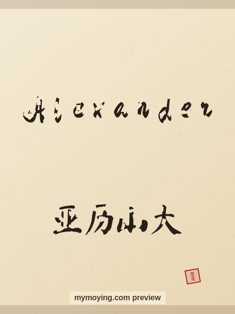

Alexander in Chinese Calligraphy
See how the name Alexander looks written with a traditional Chinese brush, next to its Chinese transliteration 亚历山大 (Yà lì shān dà).

Sample. “Alexander” in the Regular (楷书) brush style with the Chinese name 亚历山大 (Yà lì shān dà). The paid file removes the watermark.
The Chinese characters for Alexander
As a transliteration, Alexander is usually written 亚历山大 (Yà lì shān dà). Each character is listed below with its own dictionary meaning — the name is chosen by sound, not by meaning, and Moying does not translate names. Please have a person review the characters before any permanent use such as a tattoo.
Origin and meaning
Alexander is a Greek name meaning “defender of the people”.
About the name Alexander
Alexander the Great, the ancient Macedonian king, is the name's most famous bearer.
As a gift or a tattoo
People often order Alexander as a framed gift or as a tattoo — the meaning, “defender of the people”, is part of the appeal.
Open Alexander in the generatorFree watermarked preview. $1.99 once for a clean high-resolution download of this name in every style and setting. No subscription. Digital product, delivered instantly; see Terms.